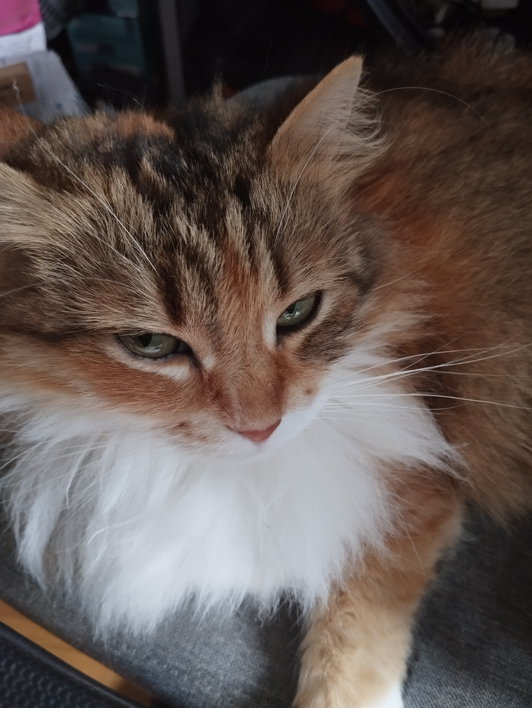
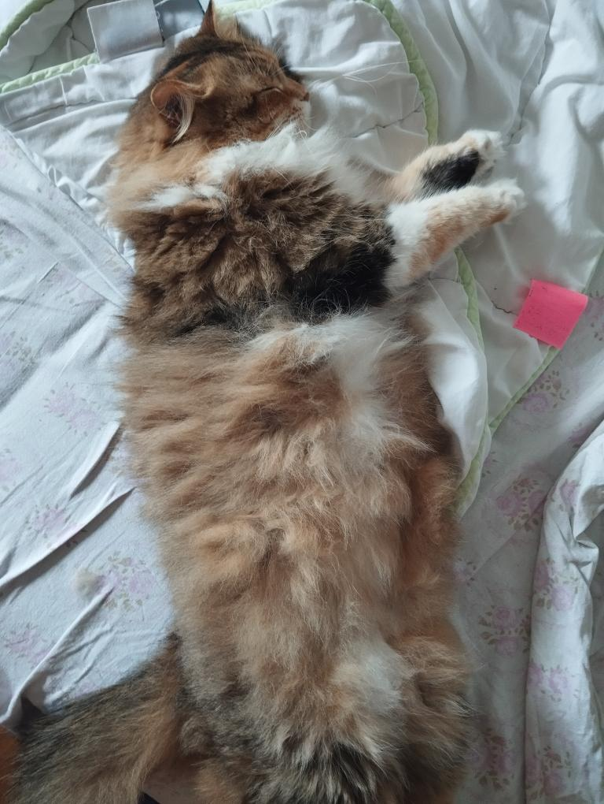
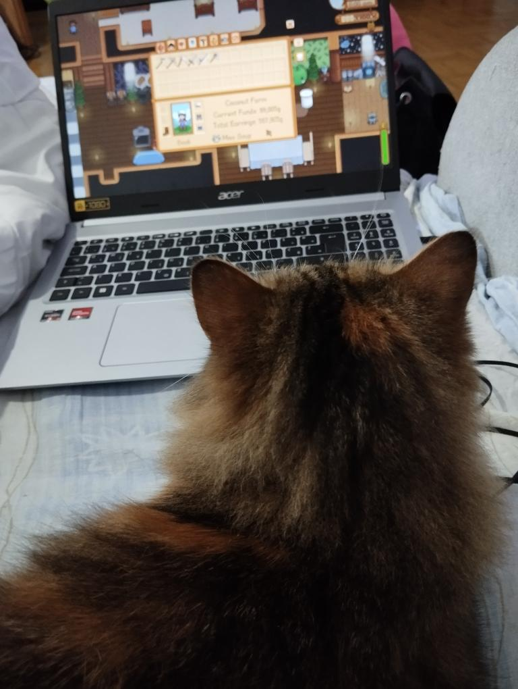
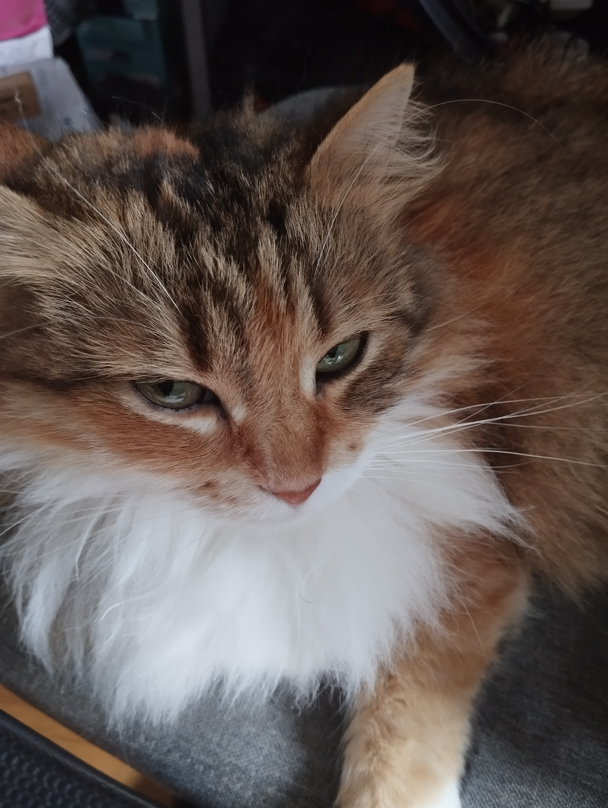
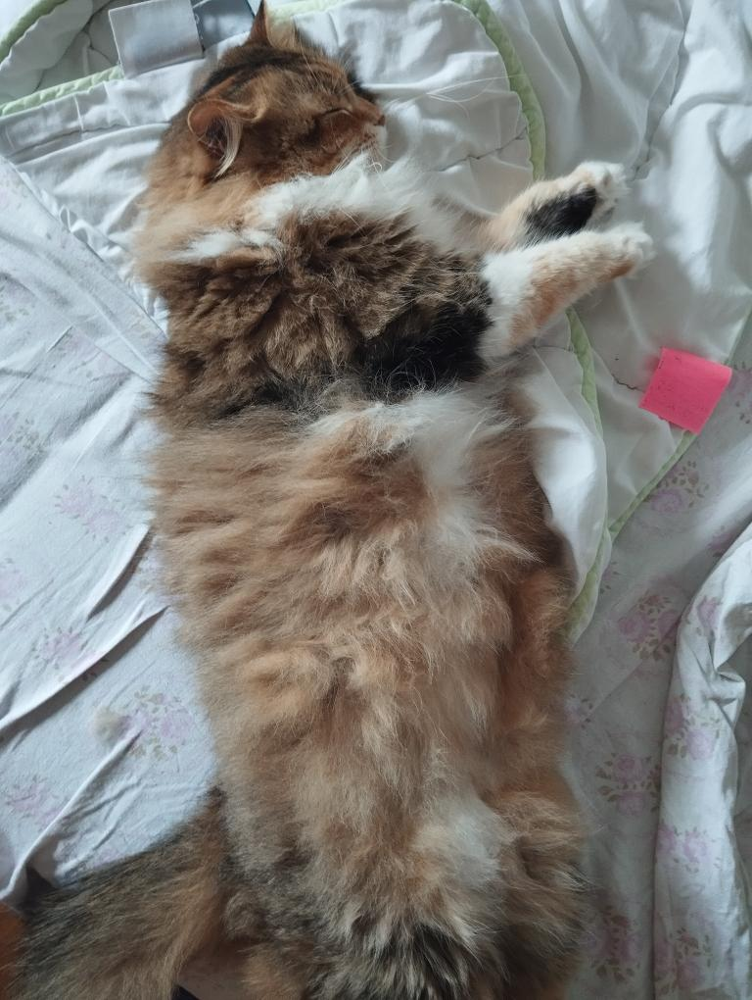
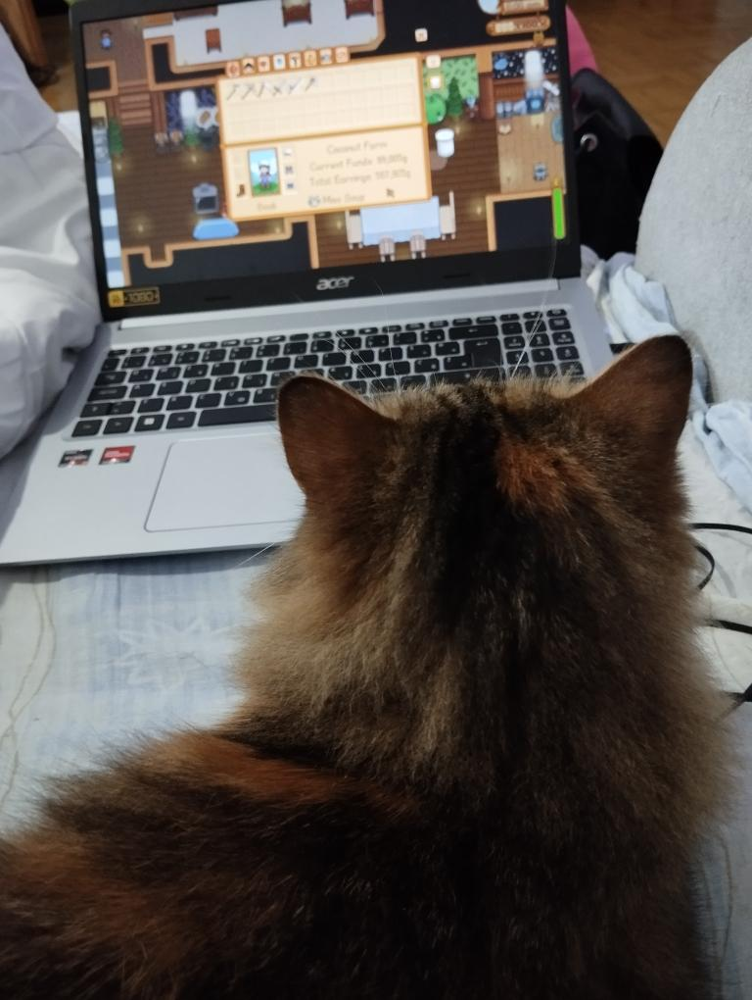

LAURA BAVCON
O MENI
Hojla!! Sem Laura, dijakinja 3. letnika Vegove Ljubljana (tehnik računalništva). Že od malega me zanimajo računalniki, kako delujejo, ipd. Na srečo me je moj oči (ki je elektrotehnik) vpeljal v ta svet in sem se odločila ga raziskovati naprej. Zelo me zanima operacijski sistem Linux (ne nism cringe Arch user, Mint my beloved) ter programiranje in omrežja. Microsoft in Apple enjoyerji ste dobrodošli oditi s te strani >:D
Seveda pa me zanimajo tudi druge stvari. V prostem času rada berem knjige ter včasih tudi kaj napišem (predvsem poezijo). Moja najljubša pesnica je Sylvia Plath, ampak berem tudi Dostoyevskega, Kafko (oz. njega še moram, jojj), Camusa pa imam kup knjig od Hemingwaya, ki jih moram še prebrati. Seveda pa rada berem tudi romance kdaj (I'm just a girl!) in kriminalke ter fantazisjke zgodbe. Najbrž tudi še kaj, ne spomnim se.
Sem zelo intenziven poslušalec glasbe, kar pomeni da me boste vedno najdli s slušalkami (vsaj v žepu). Poslušam večinoma pop, r&b ter indie glasbo, ampak včasih paše tudi kak jazz ali pa klasična oz. rock tudi. Rada poslušam Taylor Swift (sue me), Olivio Rodrigo (sue me once again), Gracie Abrams, Chase Atlantic, The Neighbourhood, beabadoobee in druge. Bom linkala moje playliste spodaj.
IZKUŠNJE IN DELO
Imam izkušnje v delu v McDonald's-u v Novi Gorici ter trenutno delam v IC Elektroniki. Več lahko izveste v mojem življenjepisu.
Znam pa uporabljati različna orodja kot npr.:
- C/C++
- Linux
- Windows
- Microsoft Office
- HTML, CSS
- SQL (MariaDB)
- Arduino
- Raspberry Pi
MOJA MUCA
Imela sem muco dolgo časa, ampak jo je mami oddala, zato bom dala tu slikice nje. Imela je preveč imen vendar večina jo pozna kot Terorist (ne, nisem si jaz tega imena izmislila ampak moja sestra). Bila je zelo puhasta in luškana. Mislim, da je njen nov dom v Divači, ampak nisem sigurna tako, da don't take my word for it.
 





O TEJ SPLETNI STRANI
To be added....